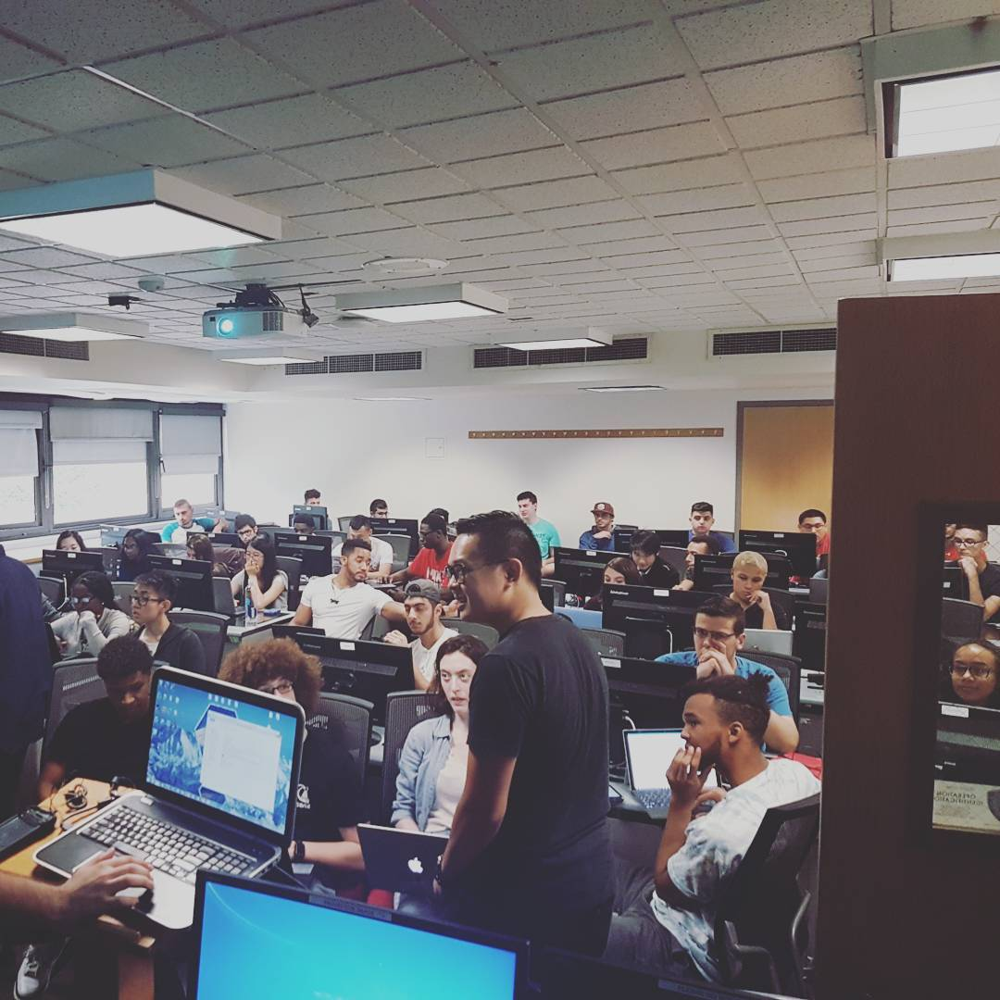
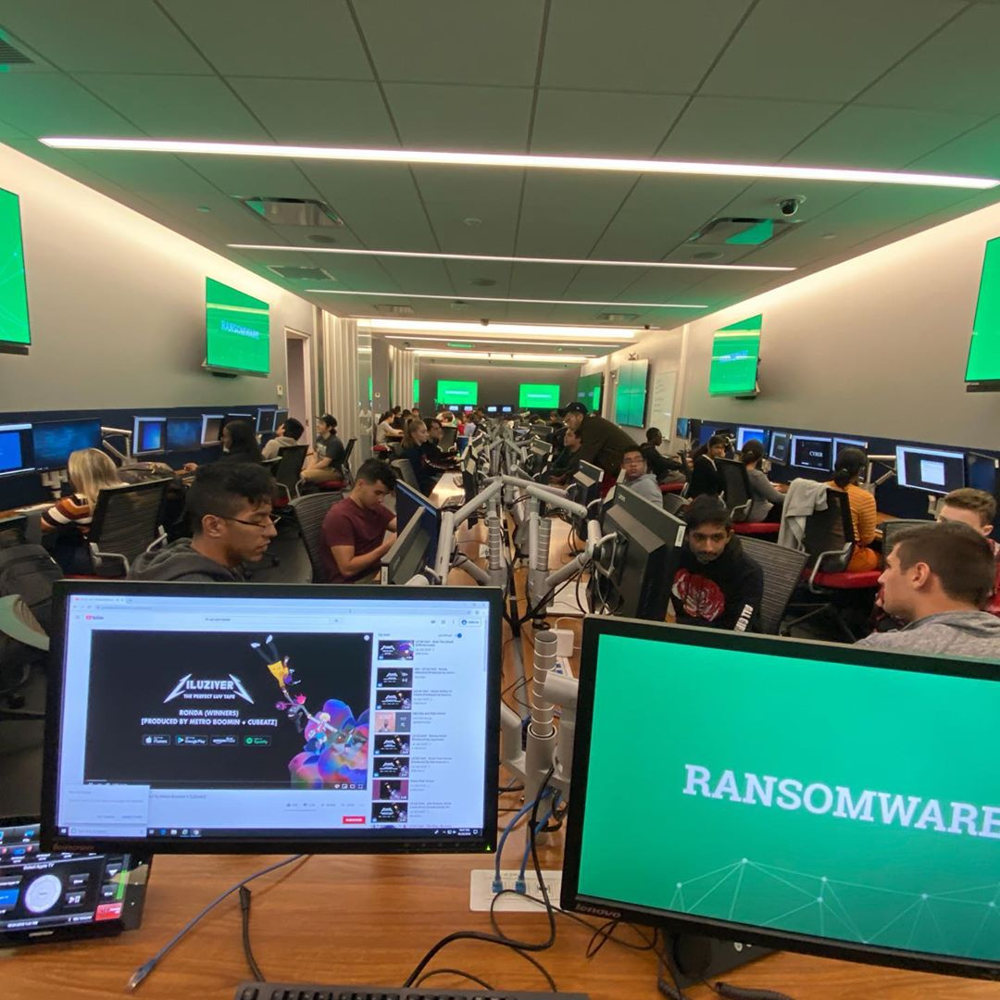
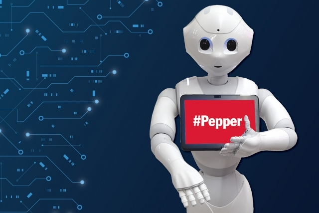
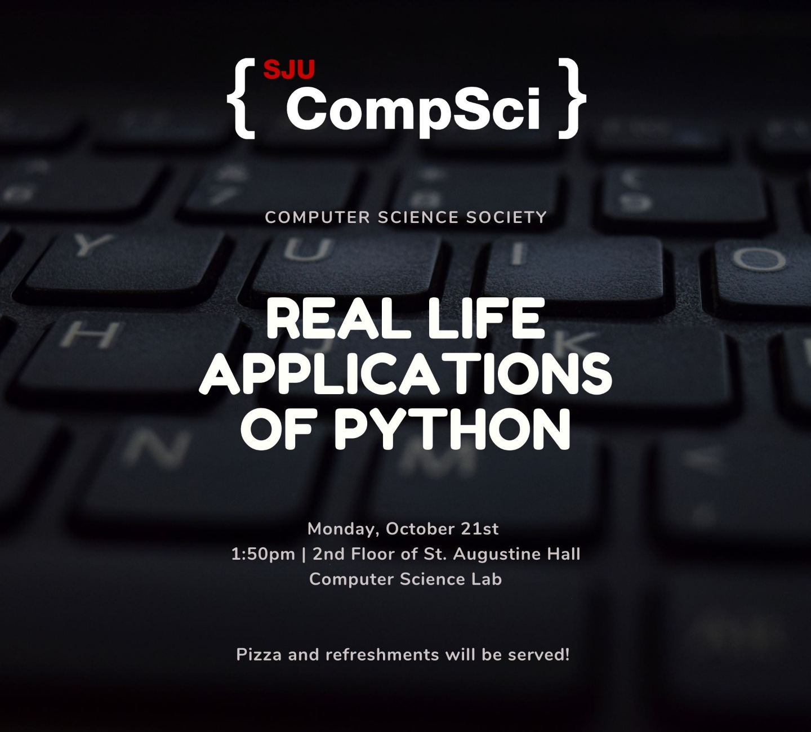
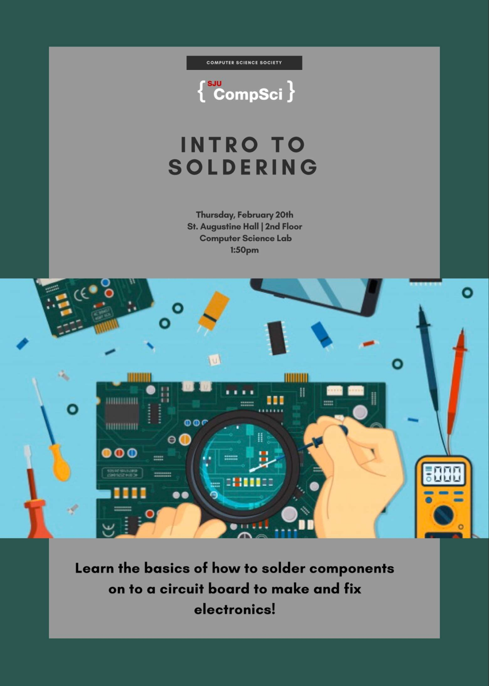
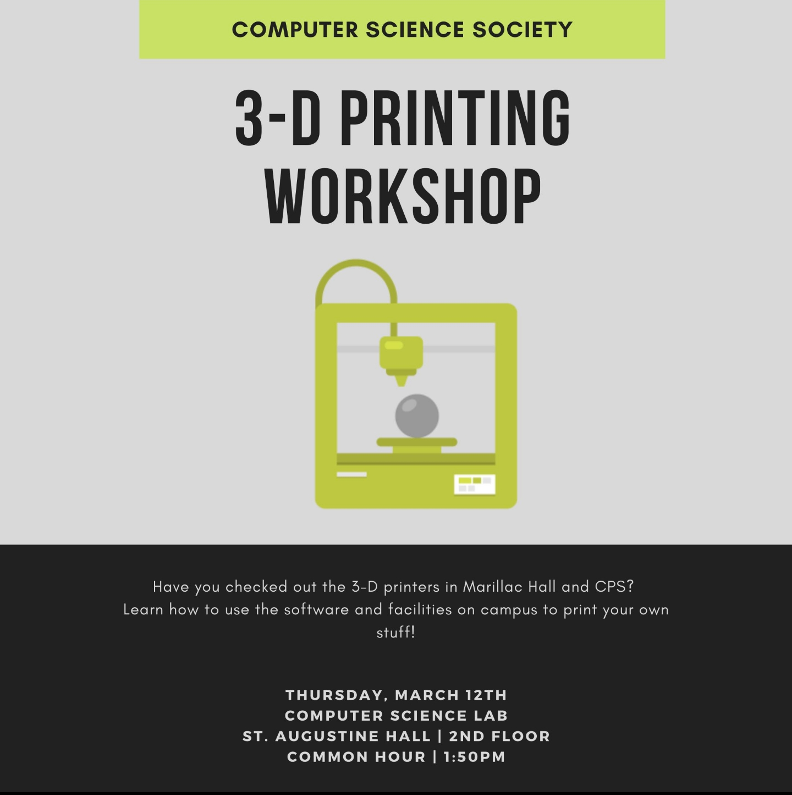

Learn About Student Advancement Technology Association
(SATA)
What Makes Up the SATA
SATA was originally created in 2018. It originally combined 3 clubs together: the Computer Science Club, the Cyber Security Club, and the Artificial Intelligence Club. We combined all 3 clubs inside this umbrella association so that each of the clubs could keep tabs on one another and ultimately make it one very strong educational and interesting association.
Each unit separate unit has their own President, Vice President, Secretary, and Treasurer while all the members of the board from each 3 sections run for the board of SATA. We made it a policy that whomever ran for positions in the individual clubs must run for a position for SATA so that way when meeting arise during the year it will be easier to keep all the clubs in check.
Our Goals
| The Computer Science Club | |
|---|---|
| The Computer Science Club hosts many opportunities for students to apply their knowledge they learn in the classroom to real life instances. The club allows them to bridge the gap form what students learn in the classroom to the real working environment. We provide them with a variety of different helpful resources so that they can exceed to their fullest potential and really understand the underlying concepts of the art of Computer Science. We give our members the opportunity to ask questions whether its related to the club’s event or other incase the do not comprehend what is being asked on an assignment for instance. Our goal is to make our members of the community much more confident in themselves and aware of new programs that are being developed so that they are exposed to as many different software as they can before joining the workforce. |  |
| The Cyber Security Club | |
|---|---|
|  | The Cyber Security Club is designed to provide students with workshops that put students to the test to use various tools and functions that they have been taught to break into a system for example. It allows students to learn and experience new tools along with their functionalities. The clubs understands the benefits of also bringing in some recently graduated students to help tell their story and share what they have learnt from the club and talk about their journey. Just like the Computer Science Club they see the importance of helping student with assignments they must complete such as labs. Grasping the initial concepts is vital to the success of a student moving forward going into higher level classes and the members of the Cyber Security Club are here to help make the material more comprehensible. |
| The Artificial Intelligence Club | |
|---|---|
| The Artificial Intelligence Club is a new branch that is being introduced to the school. There are not many classes that are being offered that allows students to learn much about AI, but through this club we hope to help create a new course students can take to learn more about robots such as pepper as well as how to program them effectively to make them useful for organizations or companies for example. The club brings in as many professors or speakers that are passionate about Artificial Intelligence as they can to show the members of the community how useful it will be in the future and how students should learn more about it since there will be more new job opportunities in that area. |  |
Events We Have Hosted


